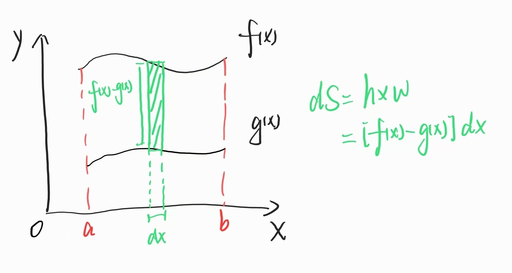
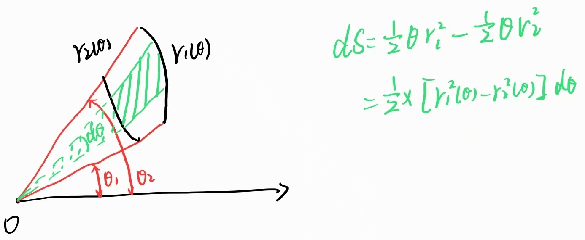
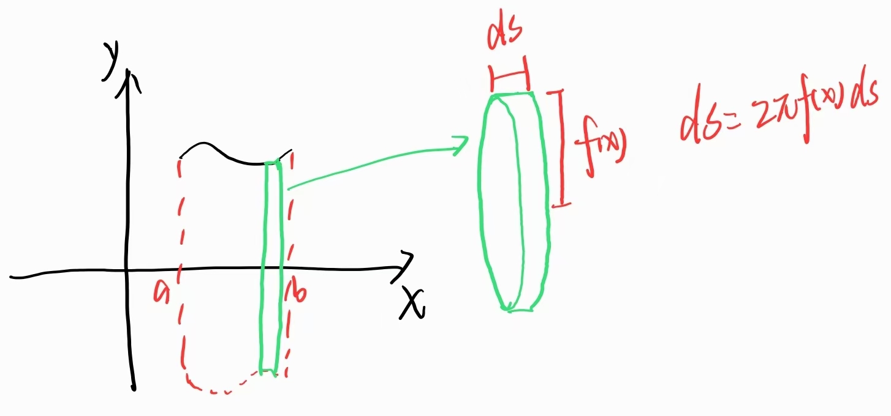

设\(D\)是由\(y=f(x),y=g(x),x=a,x=b(f(x)\geq g(x))\)围成的平面区域：
$$S = \int_a^b [f(x) - g(x)]\mathrm{d}x$$ 设\(D\)是由\(r=r_1(\theta), r=r_2(\theta), \theta=\alpha, \theta = \beta(r_1(\theta)\geq r_2(\theta))\)围成的平面区域：
$$S = \frac12\int_\alpha^\beta[r_1^2(\theta)-r_2^2(\theta)]\mathrm{d}\theta$$ [注]积分变量可以取\(x\)或\(y\).
[注]原方程较复杂时，可以化为参数方程计算.
[注]有时无需纠结函数的图像形状.
设\(D\)是由\(y=f(x),y=0,x=a,x=b\)围成的平面区域。
| \(D\)绕\(x\)轴旋转一周所得旋转体 | \(D\)绕\(y\)轴旋转一周所得旋转体 |
|
$$V = \pi \int_a^b f^2(x)\mathrm{d}x$$
体积元 $$\mathrm{d}V = \pi f^2(x) \mathrm{d}x$$近似为一个半径为\(f(x)\)，高为\(\mathrm{d}x\)的圆柱体. $$V = \int_a^b \pi f^2(x)\mathrm{d}x = \pi\int_a^b f^2(x)\mathrm{d}x$$ |
$$V = 2\pi\int_a^bxf(x)\mathrm{d}x$$ |
| \(D\)绕\(y = k\)旋转一周所得旋转体 | |
| $$V = \pi \int_a^b [f(x)-a]^2 \mathrm{d}x$$ |
绕\(x\)轴旋转的体积：
$$V = \pi\int_a^b f^2(x)\mathrm{d}x$$令\(x = x(t)\)
$$\begin{align} V &= \pi\int_\alpha^\beta f^2[x(t)]\mathrm{d}x(t)\\ &= \pi\int_\alpha^\beta y^2(t)x'(t)\mathrm{d}t \end{align}$$由于\((t_0,x_0,y_0)\)唯一对应，故
$$y = f(x) = f[x(t)] = y(t)$$| $$y = f(x), a\leq x\leq b$$ |
$$L = \left|\int_a^b \sqrt{1+f'^2(x)}\mathrm{d}x\right|$$
$$\Delta L = \sqrt{(\Delta x)^2 + (\Delta y)^2} = \sqrt{1 + (\frac{\Delta y}{\Delta x})^2}\Delta x$$
$$L = \lim\limits_{n\rightarrow \infty}\sum\limits_{k=1}^n\sqrt{1 + (\frac{\Delta y}{\Delta x})^2}\Delta x$$
|
| $$\begin{cases}x = x(t)\\y = y(t)\end{cases}, \alpha\leq t\leq \beta$$ |
$$L = \left|\int_\alpha^\beta \sqrt{x'^2(t) + y'^2(t)}\mathrm{d}t\right|$$
$$L = \int_a^b \sqrt{1+f'^2(x)}\mathrm{d}x$$
$$\begin{cases}t = \alpha \rightarrow x = a\\t = \beta \rightarrow x = b\end{cases}$$
$$\begin{align}
L &= \int_\alpha^\beta \sqrt{1 + \left [\frac{y'(t)}{x'(t)}\right]^2}x'(t)\mathrm{d}t\\
&= \int_\alpha^\beta \sqrt{x'^2(t) + y'^2(t)}\mathrm{d}t
\end{align}$$
|
| $$r = r(\theta), \alpha \leq \theta \leq \beta$$ | $$L = \int_\alpha^\beta \sqrt{r^2(\theta) + [r'(\theta)]^2}\mathrm{d}\theta$$ |
由\(y=f(x)\geq 0, x=a, x=b\)以及\(x\)轴围成的区域绕\(x\)轴旋转所得旋转体的侧面积：
$$S = 2\pi\int_a^bf(x)\sqrt{1+f'^2(x)}\mathrm{d}x$$ 压强\(p = \rho g h\)
压力\(P = pS\)